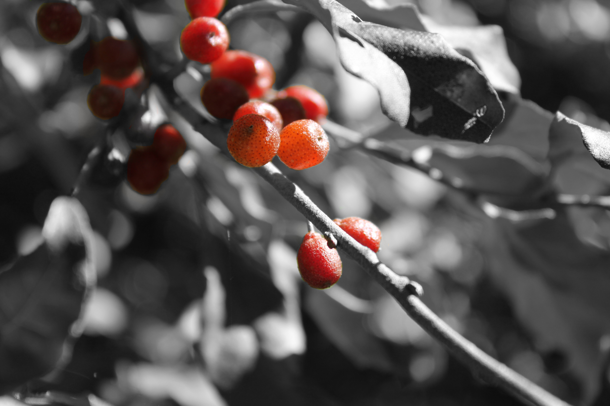
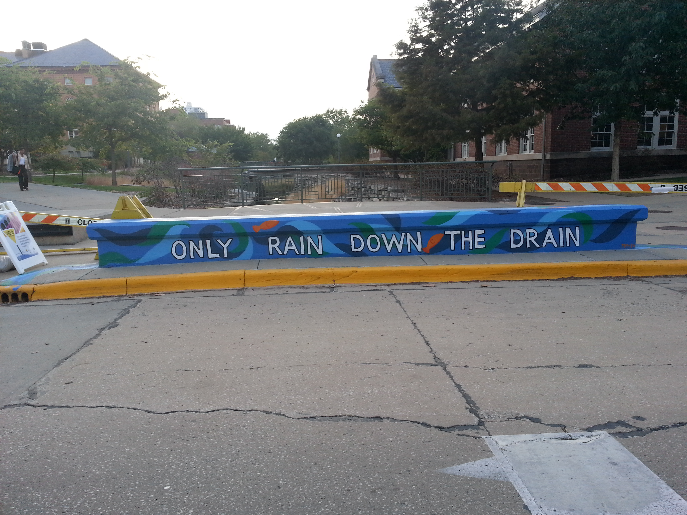
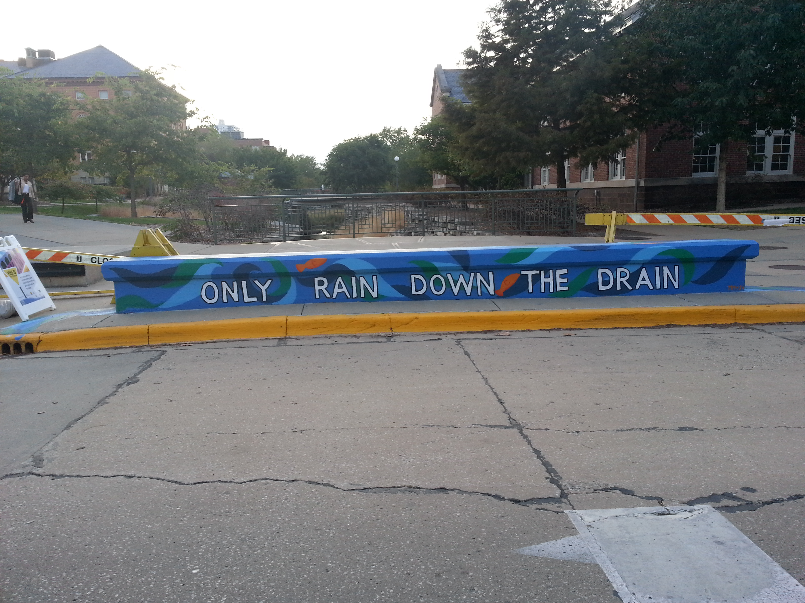
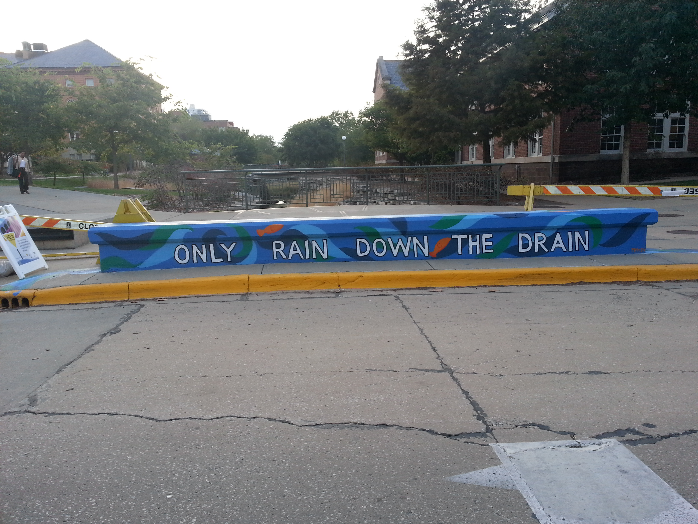
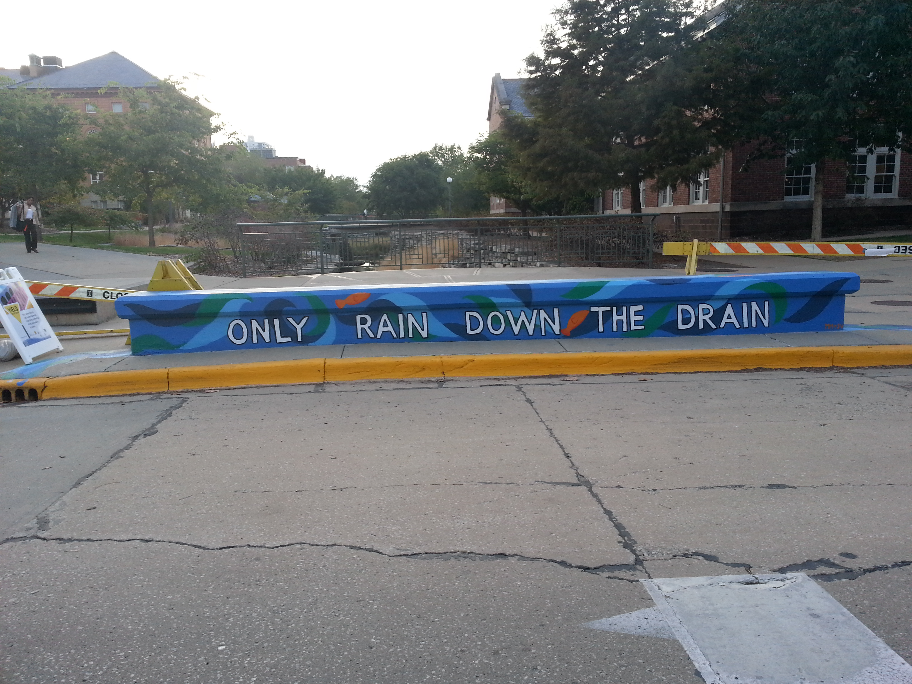

 


Autumn Berry Inspired
A local business creates a revolutionary food from invasive plants. See how Autumn Berry Inspired is changing agricultural perspectives here!

A local business creates a revolutionary food from invasive plants. See how Autumn Berry Inspired is changing agricultural perspectives here!